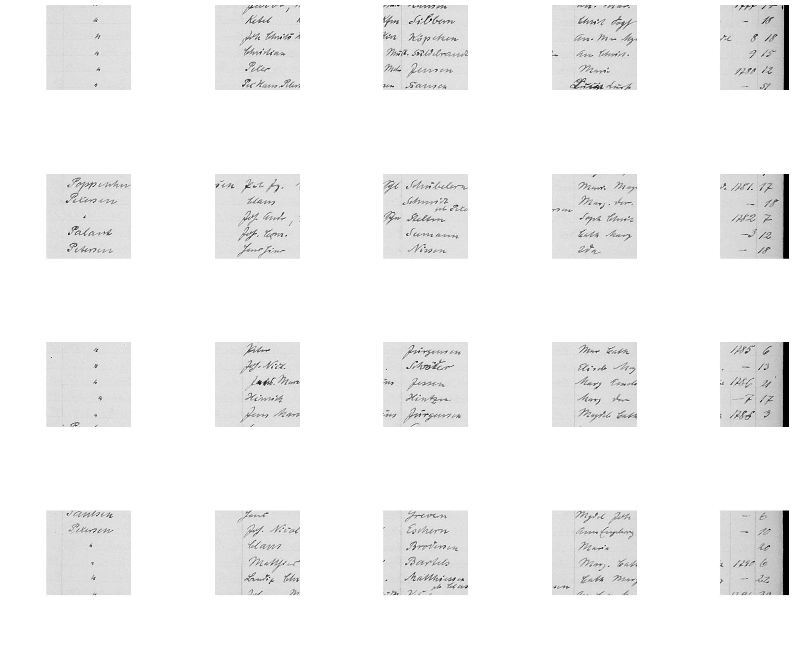
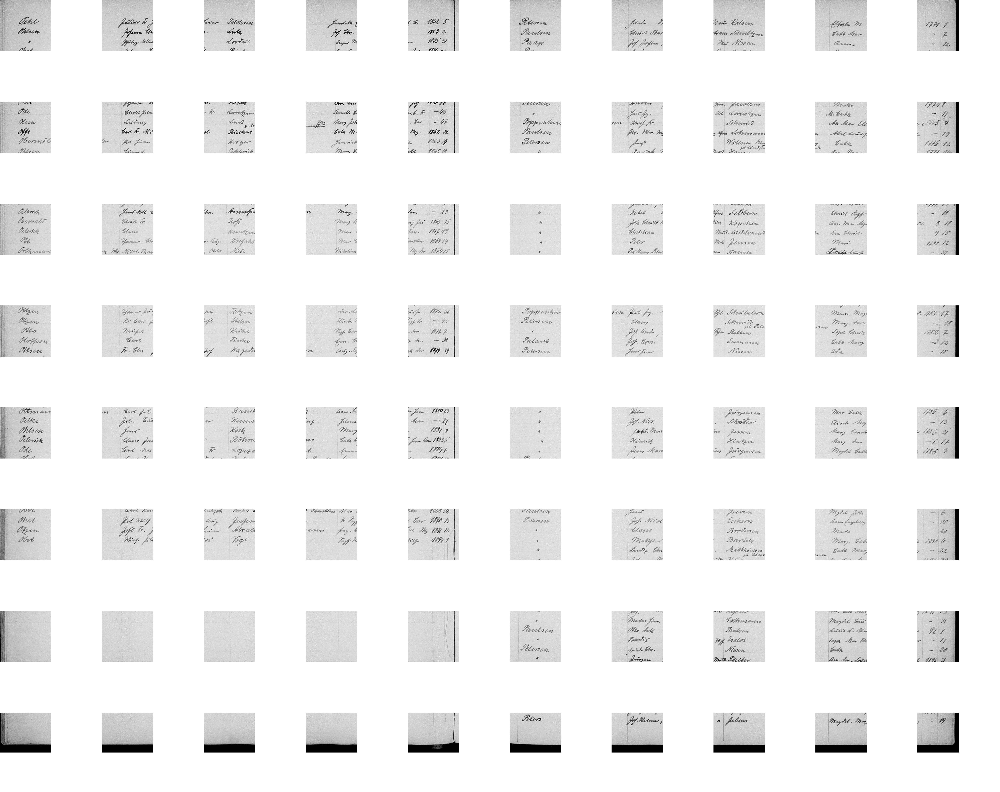

Schleswig-Domgemeinde · Vol 274911 · Page 58
| Name | Year | Entry # | Status |
|---|---|---|---|
| Paul Jürgen Poppenhusen | 1780 | 12 | Pending Search |
| Wilhelm Fr. Poppenhusen | 1775 | 7 | Confirmed Record |
| Jürgen Poppenhusen | 1781 | 17 | Confirmed Record |
| Paul Jürgen Poppenhusen | 1851 | 17 | Later Generation |

